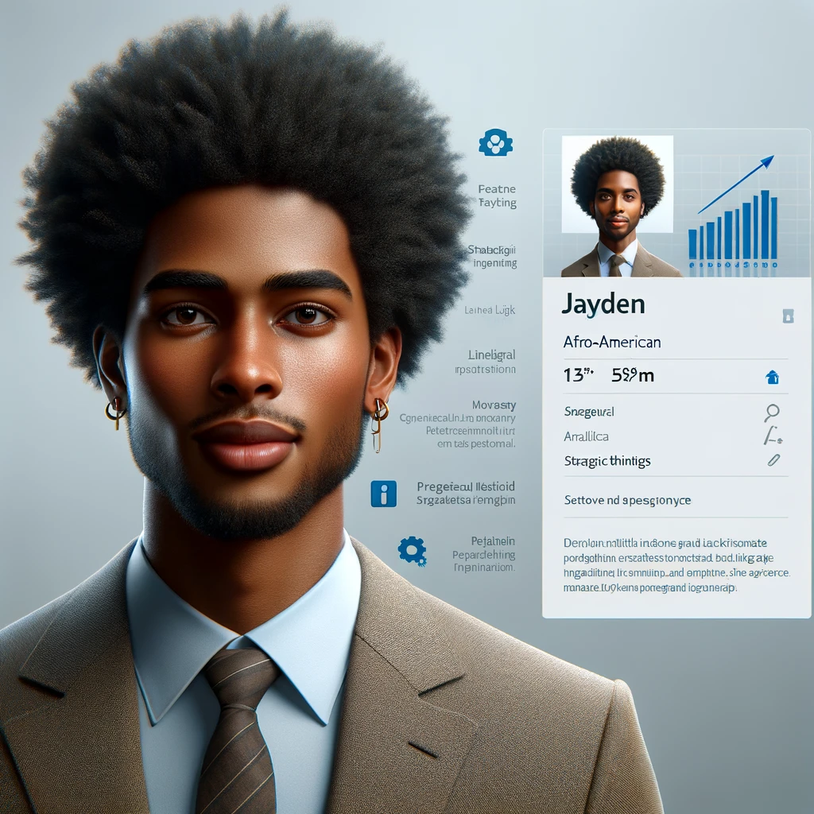

|
|

|
|
|
1. Persoonlijk leiderschap en professioneel vakmanschap
|
Emma toont sterke leiderschapskwaliteiten in projecten die gericht
zijn op duurzame innovatie. Haar moreel kompas stuurt haar naar
projecten die zowel ethisch als praktisch verantwoord zijn.
Reflecteert vaak op haar acties en beslissingen om te leren en te
groeien.
|
Jayden benadert persoonlijk leiderschap vanuit een analytisch
perspectief. Hij gebruikt zijn professioneel vakmanschap vooral om
datagedreven beslissingen te nemen, wat hem helpt bij het vormen
van zijn moreel kompas en professionele identiteit.
|
Lin zet haar interpersoonlijke vaardigheden in om leiderschap te
tonen door verbinding en begrip. Ze benadert vakmanschap met
empathie en aandacht voor de culturele diversiteit binnen teams,
wat haar helpt een sterk moreel kompas en zelfbewustzijn op te
bouwen.
|
|
2. Analyseren van ontwikkelingen en creëren van scenario’s
|
Emma is goed in het bedenken van creatieve en innovatieve
oplossingen voor complexe problemen, maar laat de diepgaande
data-analyse soms over aan teamleden die hier sterker in zijn.
|
Jayden excelleert in deze leeruitkomst. Zijn vermogen om
diepgaande analyses te maken en toekomstscenario's te ontwikkelen
is ongeëvenaard. Hij leidt projecten die gericht zijn op
strategische planning en risicobeheersing.
|
Lin focust meer op het menselijke aspect van veranderingen en
gebruikt scenario’s om verschillende perspectieven en belangen te
verenigen. Ze is bekwaam in het analyseren van sociale en
culturele trends en hoe deze impact hebben op organisaties.
|
| 3. Bouwen aan afstemming en samenwerking |
Emma gebruikt haar innovatieve ideeën om mensen rondom een
gemeenschappelijk doel te verenigen, maar vindt het soms lastig om
te schakelen tussen verschillende culturele perspectieven.
|
Jayden werkt effectief samen met diverse teams door zijn
analytische benadering, maar kan zich verder ontwikkelen in het
empathisch verbinden met individuele teamleden.
|
Lin blinkt uit in deze leeruitkomst. Haar natuurlijke vermogen om
empathisch te verbinden en samenwerking te faciliteren tussen
diverse groepen maakt haar tot een sleutelfiguur in elk team. Ze
leidt projecten die diversiteit en inclusiviteit bevorderen.
|
|
4. Methodisch handelen voor bedrijfskundige vraagstukken
|
Emma's sterke punt is haar vermogen om innovatieve oplossingen te
implementeren. Ze past methodisch handelen toe om duurzame
veranderingen door te voeren, alhoewel haar aanpak soms meer
iteratief dan systematisch is.
|
Jayden's methodische aanpak is uiterst effectief in het
identificeren en oplossen van bedrijfskundige vraagstukken. Zijn
projecten zijn vaak voorbeeldig in hoe evidence-based
besluitvorming tot succesvolle resultaten leidt.
|
Lin past methodisch handelen toe met een sterke focus op het
menselijke aspect van verandering. Haar projecten omvatten vaak
een zorgvuldige diagnose van organisatieculturen en -dynamieken,
waarbij ze zoekt naar harmonieuze oplossingen.
|
|
Projectvoorbeelden
|
Emma werkte aan een project om een circulair economiemodel te
ontwikkelen voor een start-up, waarbij ze de nadruk legde op
innovatieve recyclingtechnieken en duurzame productieprocessen.
Haar leiderschap en innovatief denken stimuleerden het team om
creatieve oplossingen te bedenken, hoewel ze ervoor zorgde dat het
project ethisch en milieubewust bleef. Ze gebruikte haar
vaardigheid in projectmanagement om het project ondanks enkele
culturele en technische uitdagingen tot een goed einde te brengen.
|
Jayden leidde een project gericht op het verbeteren van de
strategische besluitvorming binnen een internationale organisatie
door de implementatie van een geavanceerd data-analyse systeem.
Zijn diepgaande analyse van zowel interne als externe data hielp
bij het identificeren van kernrisico's en kansen voor de
organisatie. Jayden gebruikte scenario-planning om verschillende
toekomstige paden te verkennen en ontwikkelde een robuust plan dat
het bedrijf hielp zich aan te passen aan veranderende
marktomstandigheden.
|
Lin coördineerde een cross-cultureel project gericht op het
bevorderen van inclusiviteit binnen een multinationale
onderneming. Ze faciliteerde workshops en dialoogsessies om
bewustzijn en begrip tussen medewerkers van verschillende
achtergronden te creëren. Lin's vermogen om empathisch te
verbinden en effectief te communiceren zorgde voor een sterke
samenwerking en hielp bij het ontwikkelen van een inclusieve
bedrijfscultuur die ieders bijdrage waardeert. Haar methodische
benadering van het diagnosticeren van de bestaande bedrijfscultuur
en het implementeren van veranderingsstrategieën droeg bij aan een
meer betrokken en productieve werkomgeving.
|